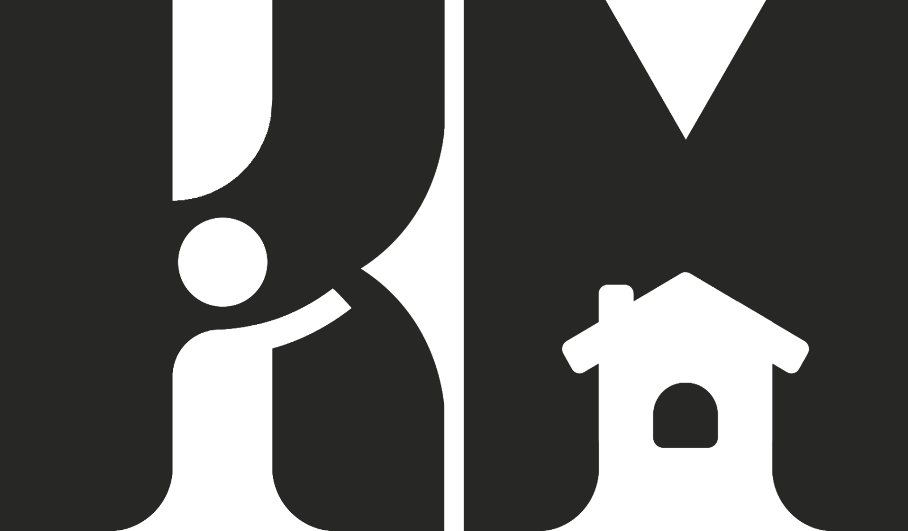

Aicinājums jauniešiem pieteikties konferencei “Kad līdzdalība kļūst par partnerību” (12.–13. novembris, Rīga)

Labdien!
Bērnu aizsardzības centrs (BAC) sadarbībā ar biedrību “Klubs “Māja”” aicina Jūsu izglītības iestādes jauniešus, skolēnu pašpārvalžu pārstāvjus, jauniešu domju dalībniekus un aktīvistus pieteikties valsts mēroga jauniešu konferencei “Kad līdzdalība kļūst par partnerību”.
Bieži vien jauniešu līdzdalība aprobežojas ar anketu aizpildīšanu vai uzklausīšanu bez reālas rīcības sekām. Šīs konferences mērķis ir pāriet no ierastās jauniešu uzklausīšanas uz reālu, līdzvērtīgu partnerību pakalpojumu pilnveidē un lēmumu pieņemšanā.
Divu dienu garumā mākslas centrā “Zuzeum” pulcēsies jaunieši, valsts pārvaldes lēmumpieņēmēji, kā arī nevalstiskā un privātā sektora eksperti, lai kopīgi meklētu risinājumus, kā jauniešu viedokli un pieredzi integrēt konkrētos pakalpojumos un valstiska līmeņa pārmaiņās.
Ko iegūs jaunieši?
-
Jaunas metodes Jūsu pašvaldībai/skolai: Jaunieši atgriezīsies ar praktiskām iemaņām un rīkiem (piemēram, "Demokrātijas kafejnīcas" metodi), ko izmantot vietējā līmenī vai skolēnu pašpārvaldes darbā.
-
Reāla ietekme: Iespēja tiešā dialogā ar lēmumpieņēmējiem paust viedokli un pilnveidot jauniešiem paredzētos pakalpojumus.
-
Iedvesmojoši pieredzes stāsti: Dzirdēt 5 reālus stāstus par to, kā no idejas nonākt līdz konkrētam rezultātam un pārmaiņām sabiedrībā.
-
Praktiskas UX un dialoga iemaņas: Apgūt metodes, kā skatīties uz procesiem no lietotāja skatpunkta un kā sarunāties par sarežģītām tēmām.
-
Jauni kontakti: Iepazīties ar citiem aktīvajiem jauniešiem no visas Latvijas un valsts sektora ekspertiem.
Konferences programma īsumā
-
12. novembris: no uzklausīšanas uz patiesu dialogu: Līdzdalības kultūra, jauniešu loma valsts pārvaldē un cieņpilns dialogs arī sarežģītās tēmās. Dienas noslēgumā plānota interaktīva darbnīca “Demokrātijas kafejnīca”.
-
13. novembris: pieredze un pakalpojumu līdzradīšana: Lietotāju pieredze, iedvesmas stāsti, paneļdiskusija “Jūs jautājāt. Mēs atbildējām. Kas mainījās?” un kopīga pakalpojumu uzlabošanas darbnīca.
Pasākuma detaļas
-
Norises laiks: 2026. gada 12. un 13. novembris
-
Norises vieta: Mākslas centrs “Zuzeum”, Lāčplēša iela 101, Rīga
-
Dalības maksa:Bez maksas (tiek nodrošinātas kafijas pauzes un pusdienas, kā arī jauniešiem, kas mēro tālāku ceļu (70+km) tiek apmaksāti ceļa izdevumi, naktsmītnes)
-
Attaisnojums mācībām: Dalībniekiem pēc pieprasījuma tiek izsniegta attaisnojuma zīme par dalību pasākumā.
-
Vietu skaits: Ierobežots!
PIETEIKŠANĀS:
Aizpildiet pieteikuma anketu šeit: ej.uz/konf-nov
Pieteikšanās termiņš: līdz šī gada 5. novembrim
Aicinām Jūs pārsūtīt šo vēstuli savas iestādes jauniešiem un iedrošināt viņus izmantot šo iespēju!
Jautājumu gadījumā lūdzam sazināties ar Kati, rakstot uz kate.vildina@klubsmaja.lv
--
|
|
Kate Katrīna Vildiņa Biroja vadītāja birojs@klubsmaja.lv | +371 28934502 klubsmaja.lv | @klubsmaja |

|
@agenskalna.valsts |
avgdome@gmail.com |
@avgdome |
@agenskalniesi |